User manual
Running the console
Everything the console does, screen by screen: keeping members safe, answering their questions, taking their money and telling them things — with the reasoning behind each screen, so you know not just where to click but when to.
- Document
- User manual
- Audience
- Admins, moderators, support
- Companions
- The product · API reference
- Revised
- 26 September 2026 — screenshots re-taken from the running product
- Reading time
- About 45 minutes
1. Signing in and finding your way
The console lives at /admin. Members sign in somewhere else entirely, so a member's email and password will
never open the console — and yours will not open the member app.
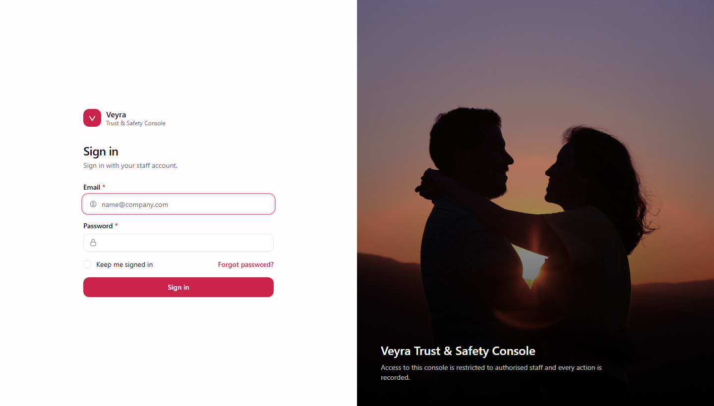
- Open
/adminand sign in with your work email address. - If you have forgotten your password, use Forgot password. The link that arrives is valid for one hour.
- After five wrong attempts the form pauses for a minute. This is deliberate and will clear on its own.
The product does not carry a name of its own. The name, logo, favicon, colours, currency, plan names and prices, the profile questions, the interests, the report categories and every message a member receives are rows in the database, edited in the console — no code, no deployment. The screenshots here show a demo configuration named "Dating App"; that name is a setting, and the mark beside it is drawn from it. Change it in Settings → Branding and the website, the member app, the console and the emails all follow within a second.
What you can see depends on your role
The menu is filtered by what you are allowed to do. If a colleague describes a screen you cannot find, you do not have that permission — ask an administrator rather than hunting for it. The table below is the whole map.
What each role sees
The menu is built from permissions, so nobody is shown a screen they cannot open. This is the whole sidebar, role by role — worth reading before you hand an account to somebody, because the role is the decision.
| Menu | Super Admin | Admin | T&S Lead | Senior Mod | Moderator | Support | Analyst |
|---|---|---|---|---|---|---|---|
| Dashboard | ✓ | ✓ | ✓ | ✓ | ✓ | ✓ | ✓ |
| Users | ✓ | ✓ | ✓ | ✓ | ✓ | ✓ | ✓ |
| Verification | ✓ | ✓ | ✓ | ✓ | ✓ | ✓ | ✓ |
| Matches | ✓ | ✓ | ✓ | ✓ | ✓ | ✓ | ✓ |
| Conversations | ✓ | ✓ | ✓ | ✓ | ✓ | ✓ | — |
| Cases | ✓ | ✓ | ✓ | ✓ | ✓ | ✓ | ✓ |
| Enforcement | all | no devices | all | all | no devices | bans, blocks | bans |
| Appeals | ✓ | ✓ | ✓ | ✓ | ✓ | ✓ | — |
| Billing → Payments | ✓ | ✓ | — | — | — | ✓ | — |
| Billing → Subscriptions | ✓ | ✓ | — | — | — | ✓ | — |
| Billing → Plans | ✓ | ✓ | — | — | — | — | — |
| Billing → Gateways | ✓ | ✓ | — | — | — | — | — |
| Notifications | all | all | — | — | — | campaigns, templates, logs | logs |
| Analytics | ✓ | ✓ | ✓ | ✓ | — | — | ✓ |
| Staff | ✓ | ✓ | ✓ | — | — | — | — |
| Roles | ✓ | ✓ | — | — | — | — | — |
| Audit log | ✓ | ✓ | ✓ | ✓ | ✓ | — | — |
| Masters | ✓ | ✓ | ✓ | — | — | — | — |
| Settings → Branding, Mail, Logs, Backup | ✓ | ✓ | — | — | — | — | — |
| Settings → Product & safety | ✓ | ✓ | ✓ | — | — | — | — |
Seeing a menu is not the same as being able to change what is on it. A Trust & Safety Lead sets moderation policy but never sees the pricing or the brand; an Admin runs the platform and the money but cannot read a member's messages or decide an appeal; Support can look up a payment and give somebody a plan but cannot ban anyone. Those splits are what make the audit log worth reading.
The parts of every screen
| Where | What it is |
|---|---|
| Left | The menu, grouped by the job it does: Community, Trust & Safety, Billing, Operations, Administration |
| Red badges | Work waiting for you: open cases, pending verifications, appeals, overdue shadow-ban reviews, plans ending this week |
| Top centre | Search. Press Ctrl+K from anywhere to find a member, a case or a verification by name, email or reference |
| Top right | Light or dark mode, your notifications, and your own account menu |
Filters are kept in the address bar. When you have a view you use every morning, bookmark it — it will open with the same filters applied.
2. The dashboard
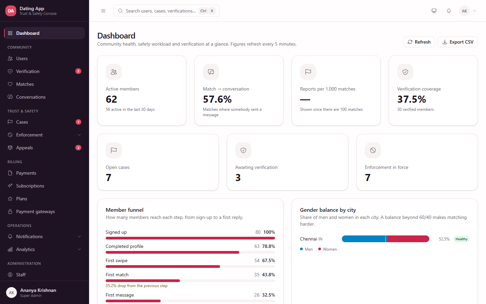
The numbers are chosen to describe a dating product rather than a website. The ones worth watching daily:
| Figure | What it tells you | When to worry |
|---|---|---|
| Sign-up funnel | How many finish a profile, verify, swipe, match, and get a reply | A step that drops sharply usually means something broke, not that people lost interest |
| Gender balance by city | The structural health of each market | Past roughly 65/35 a city stops working for the larger side |
| Reports per 1,000 matches | Whether the community is getting worse | A rising line while matches are flat |
| Verification turnaround | How long members wait to be verified | Anything over a day: members give up |
| Likes to the top 10% | How concentrated attention is | Very high means most members are being ignored |
3. Members
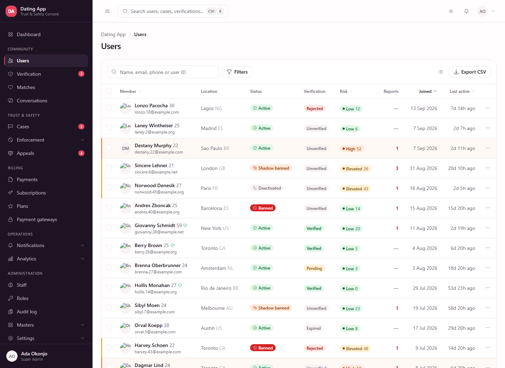
Finding somebody
- Type a name or email into the search box, or press Ctrl+K from anywhere.
- Use the filters for a group rather than a person: everyone unverified in Chennai, everyone reported this week, everyone on a paid plan.
- Export CSV takes whatever the filters currently show. Exports that include email addresses are recorded in the audit log.
Reading a member's record
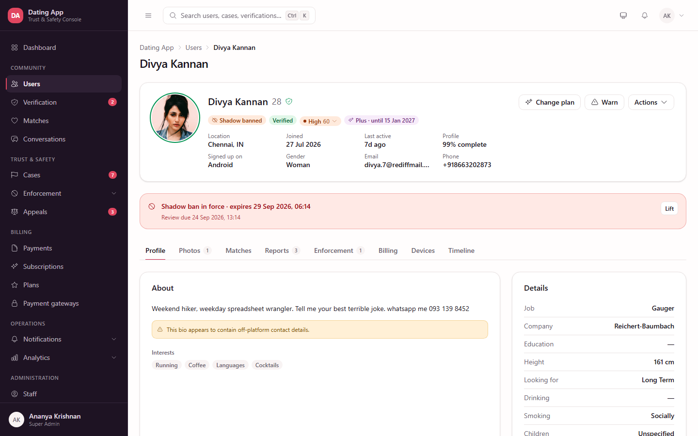
| Tab | Use it to answer |
|---|---|
| Profile | Who they say they are, and how complete it is |
| Photos | What they are showing, and what moderation decided |
| Matches | Whether they are actually using the product |
| Reports | What others have said about them — and what they have said about others |
| Enforcement | Every decision ever taken, with reason and who took it |
| Billing | What they pay, until when, and how it started |
| Devices | Whether this account shares a device with others — a strong signal of a repeat offender |
| Timeline | Everything staff have done to this account |
The risk badge
The coloured score next to a member's name can be expanded. It lists the factors that produced it, each with its points. It is a stored calculation, not a guess — so if it says 72, the factors underneath add up to 72.
A high risk score is a reason to look, never a reason to act on its own. Every enforcement decision needs evidence you can point at.
4. Photo verification
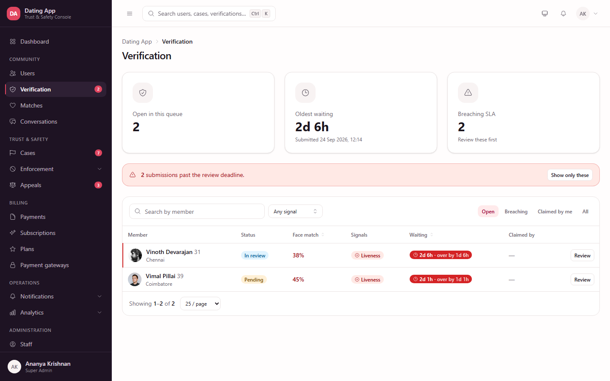
Members take a selfie holding a gesture code the server gives them. Your job is to decide whether the person in the selfie is the person in the profile photos.
- Open the oldest breaching item — the red pills are people waiting longest.
- Compare the selfie on the left with the profile photos on the right. The slider overlays them; zoom moves together.
- Read the signals row: face-match score, liveness, and how many other accounts share this face.
- Approve, or reject with a reason from the list. Reasons are fixed wording, not free text, so every member gets the same explanation for the same problem.
If the estimated age suggests a minor, Approve is disabled and the item moves to the restricted queue. Only staff with that permission see it. Never work around this.
5. Reports and cases
When members report somebody, the reports are gathered into a single case about that person. You act once, and the decision covers every report behind it.
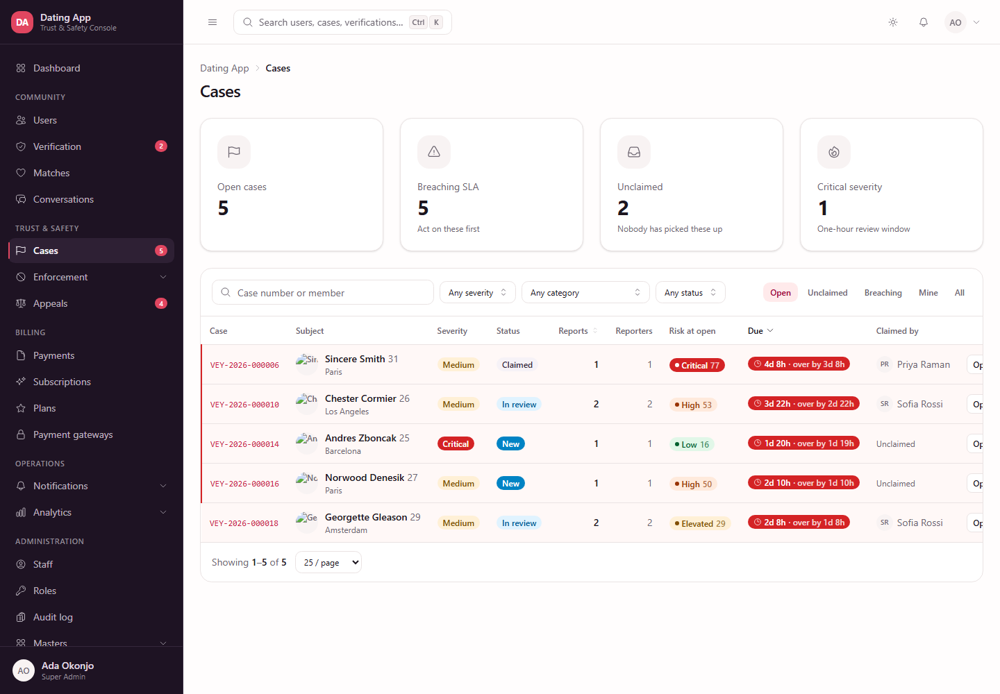
Working a case
- Claim it. Opening a case claims it, so two people do not work the same one.
- Read the evidence. A reported message is shown with the ten messages either side of it. Context changes the meaning of a sentence more often than you would expect.
- Check who reported. Each reporter carries a credibility figure based on their past reports. Five reports from one friendship group is not the same as five from strangers.
- Look at history. The prior-actions counter tells you whether this is a first mistake or a pattern.
- Decide. Pick a step on the ladder. Every decision needs a reason code, a policy clause, an internal note, and you choose whether the member is told.
Warn → limit features → shadow ban → suspend → permanent ban. Start at the step the behaviour deserves, not always at the bottom: a scam account does not get a warning first.
6. Enforcement and appeals
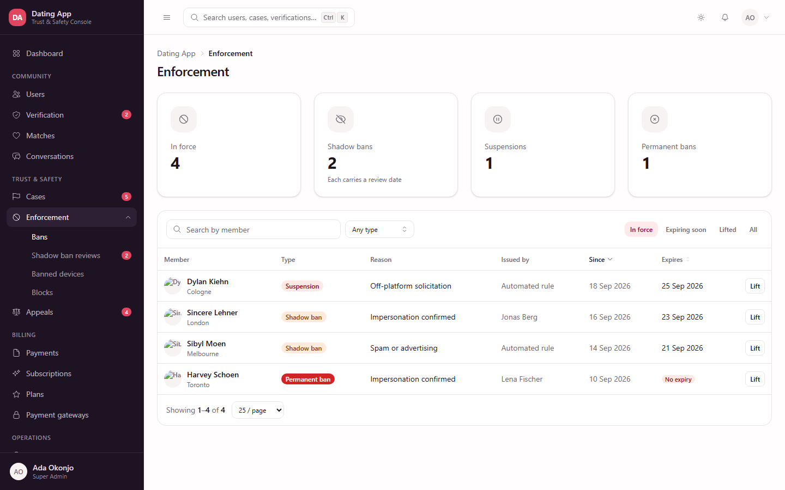
| Step | What the member experiences | Use when |
|---|---|---|
| Warn | A notice, nothing else changes | A first, minor problem |
| Feature limit | Specific things stop working | Misuse of one feature |
| Shadow ban | Everything looks normal to them, but they are not shown to others | Suspected but unproven abuse. Always has a review date |
| Suspend | Locked out for a set time, told why, can appeal | Confirmed serious behaviour |
| Permanent ban | Account closed, device optionally blocked | Fraud, threats, anything involving minors |
Every shadow ban has a review date, and Shadow ban reviews shows overdue ones in red. A shadow ban nobody revisits is a permanent silent punishment — which is exactly what this queue exists to prevent.
Appeals
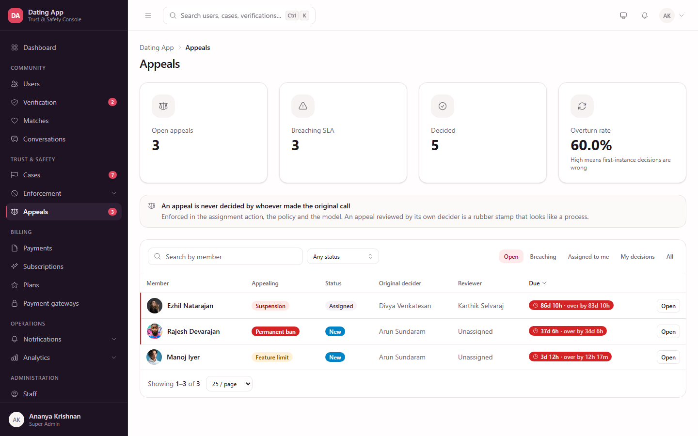
A restricted member can appeal. The system will not let the appeal go to the person who made the original decision, and moderators cannot decide appeals at all — so there is always an independent reviewer. Overturning an appeal lifts the restriction and links the reversal to the original action, so the record shows what happened and why.
7. Conversations
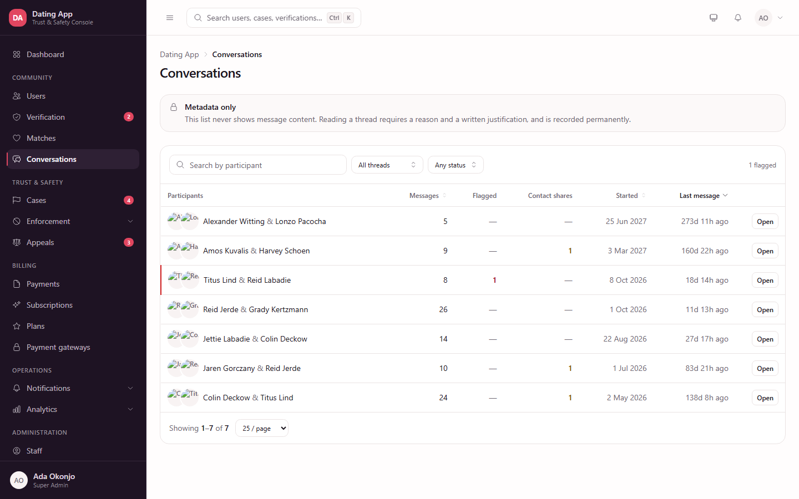
Members' private messages are private. This screen shows that a conversation exists and how it is behaving, not what was said.
If an investigation genuinely needs the content, you need the permission, and you must type a justification and link the case. Doing so writes your name into two logs, one of which your organisation reviews. Never reveal a message out of curiosity — it is visible, and it is a disciplinary matter.
8. Billing
Payments
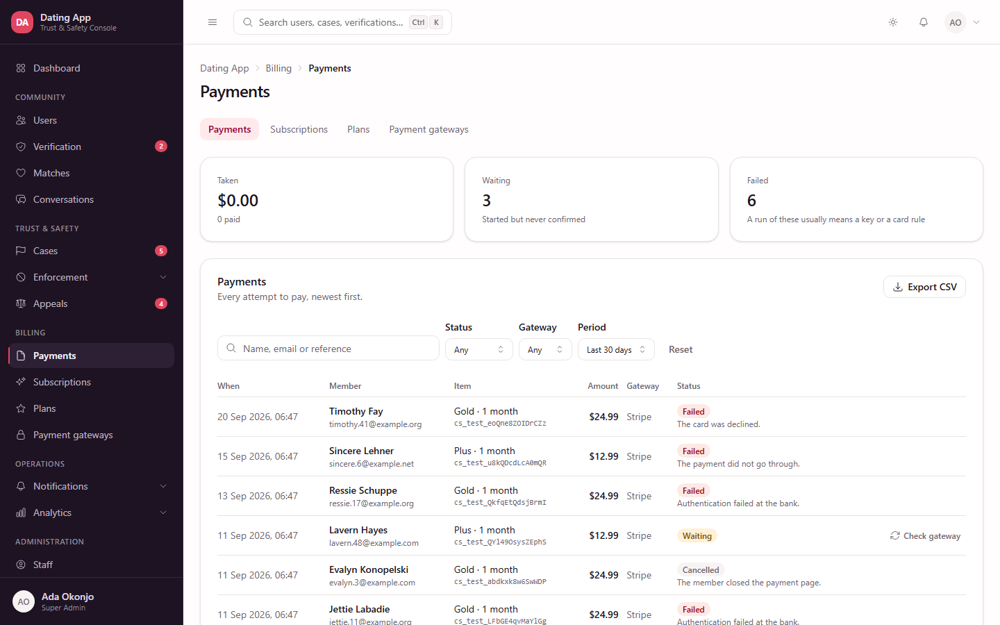
| Status | Meaning | What to do |
|---|---|---|
| Paid | The gateway confirmed it; the plan is active | Nothing |
| Waiting | Started but not confirmed. Common with bank transfers and slow methods | Press Check gateway. If it went through, the plan is applied immediately |
| Failed | The payment did not go through. Nothing was taken | Nothing, unless many fail at once — then check the gateway keys |
Find the payment by their email, press Check gateway. Nine times out of ten the webhook was delayed and this fixes it instantly. If the gateway still has nothing, the money has not actually left — banks show pending card authorisations that never complete.
Subscriptions
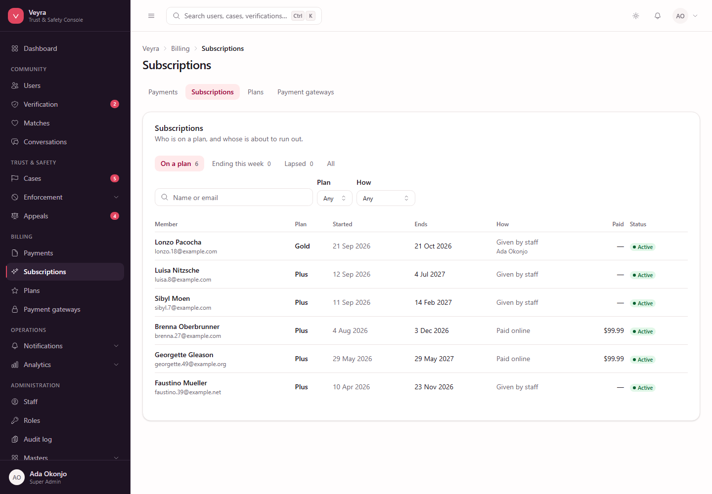
The How column says where a plan came from: Paid online (Stripe or Razorpay), App Store, Google Play, or Given by staff. A store plan also shows whether it renews or will not renew — that is the store's own word, refreshed every time the store tells us something. A member can hold plans from more than one source at once; the tier they actually get is the best of them and the end date the latest, and nothing you or a store does ever shortens or downgrades a plan that is still running.
Moving a store subscription to another account
Somebody signed up twice, or redeemed their App Store purchase on the wrong login. The store keeps billing the same Apple ID or Google account whatever we do, so the fix is to move the subscription to the right member here rather than editing anything by hand.
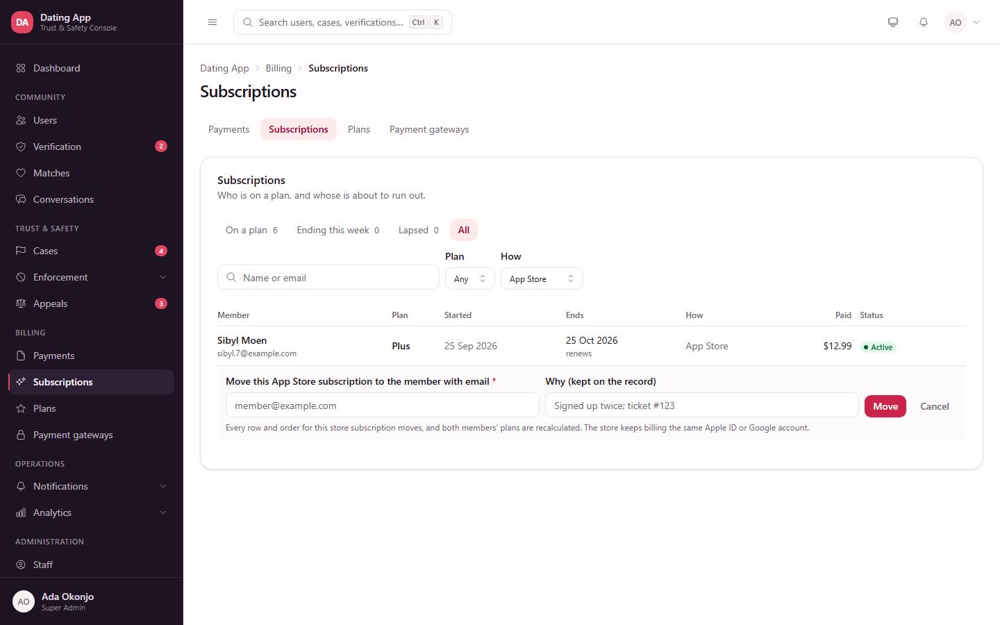
- Find the store subscription (filter How to App Store or Google Play) and press Move to another account.
- Type the email of the member who should have it, and why — the note stays on the record.
- Move. Every row and order for that store subscription follows, both members' plans are recalculated, and the next renewal lands on the new owner. Needs
grant_plans; it is written to the audit log as a sensitive action.
Giving somebody a plan
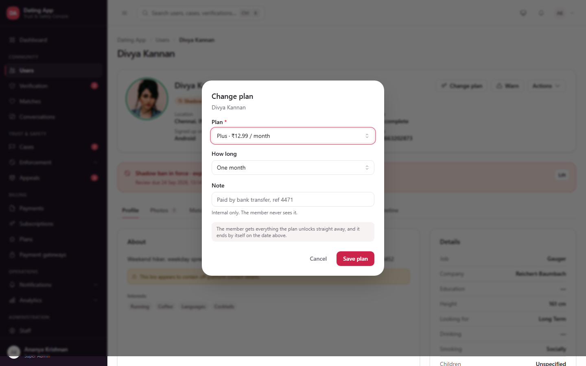
- Open the member and press Give plan.
- Choose the plan and how long: one month, one year, until a date, or no end date.
- Write a note — "paid by bank transfer, ref 4471". Only staff ever see it, and in six months it is the only reason anyone will know why.
- Save. The member has everything the plan unlocks straight away, and it ends by itself on the date you chose.
Plans and gateways
Billing → Plans is where you set what is sold: name, monthly and yearly price, what it unlocks, the colour of its badge and the "Most popular" highlight. A plan members are on can be hidden but not deleted — they keep what they paid for.
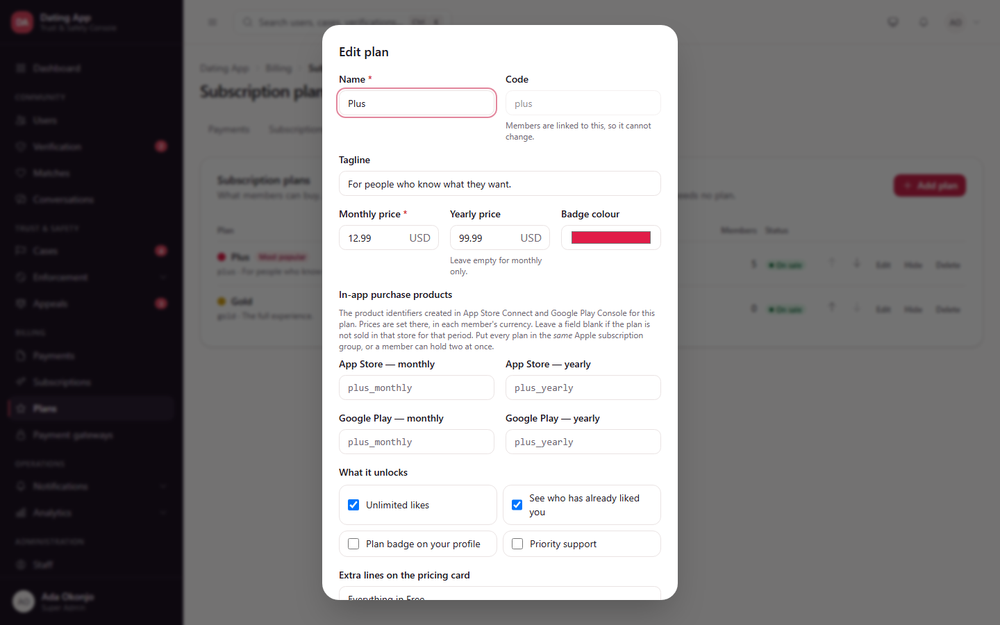
Selling in the mobile app
Apple and Google require that a subscription bought inside an app is bought through their store, so the app never sends anyone to Stripe or Razorpay. Instead each plan carries the product identifiers you created in App Store Connect and Google Play Console — one for monthly, one for yearly, per store. Prices are set in the stores, in each member's own currency; the prices here are for the website. Leave a field blank if the plan is not sold in that store for that period. One product id can belong to one plan and one period only; the form refuses a duplicate.
Apple only treats one plan as an upgrade or downgrade of another when both products sit in the same subscription group, ranked (Gold above Plus). In separate groups a member can buy both and pay twice. Google needs one product per period with a single base plan each. Nothing on this server can detect either mistake; test it with a sandbox purchase before launch.
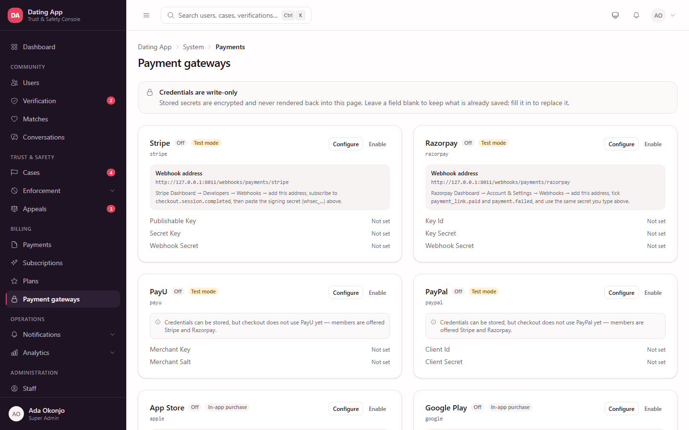
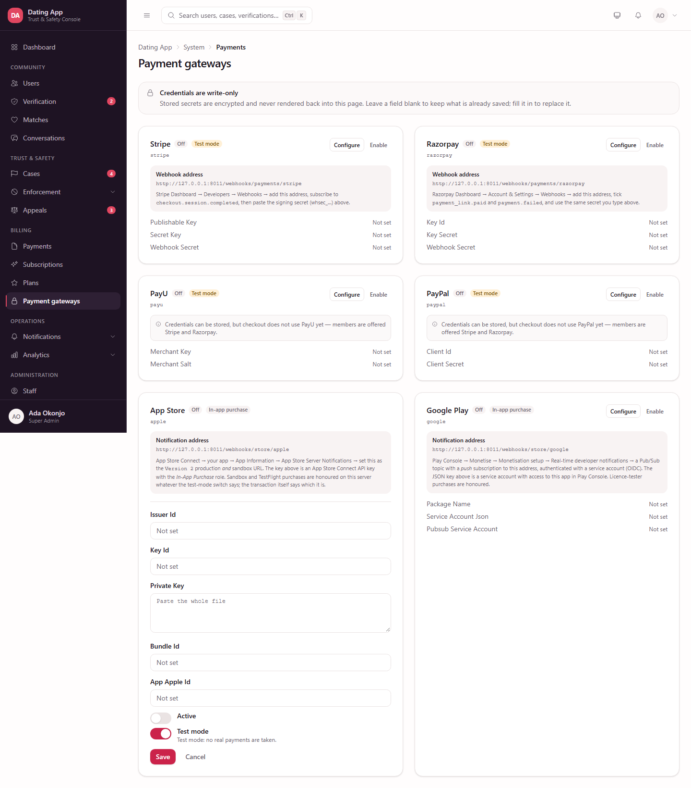
App Store needs an App Store Connect API key with the In-App Purchase role — issuer id, key id
and the .p8 file pasted whole — plus the app's bundle id and Apple id. Then, in App Store Connect → App
Information → App Store Server Notifications, set the card's notification address as the Version 2 URL for
production and sandbox. Google Play needs a service account with access to the app in Play Console
(the JSON key pasted whole) and the package name; then, in Play Console → Monetisation setup, a real-time developer
notifications topic with a push subscription to the card's address, authenticated with a service account. Without
the notification address a renewal or refund is only noticed by the expiry job.
The same key serves Apple's sandbox and production. A TestFlight or sandbox purchase is honoured on this server whatever
the test-mode switch says — the transaction itself says which environment it came from, and the Payments screen shows it.
php artisan platform:preflight proves the store credentials and warns when no plan has a product id.
Taking card payments on the website
- Press Configure on Stripe or Razorpay and paste the keys. They are stored encrypted and never shown again.
- Copy the webhook address shown on the card into the gateway's dashboard, subscribe to the events named there, then paste the signing secret back here.
- Leave test mode on and make a test purchase with a test card. Check it appears under Payments.
- Turn test mode off when you are ready to take real money.
Razorpay charges in Indian Rupees; Stripe covers dollars, euros, pounds and rupees. The screen warns you if the currency in Settings → Branding does not match the gateway you switched on, and members are not offered a gateway that cannot take their money.
9. Notifications
Setting up push
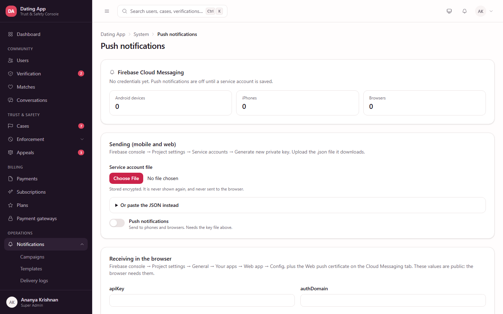
- In the Firebase console, go to Project settings → Service accounts and press Generate new private key. Upload the file it downloads.
- Turn Push notifications on and press Check credentials. Firebase should accept them.
- For browser notifications, copy the web config from Project settings → General → Your apps, and the VAPID key from the Cloud Messaging tab. Then turn on Browser notifications.
- Send yourself a test using your own member account's email.
It will not work. Google switched that API off. Only the service account file works now.
Campaigns
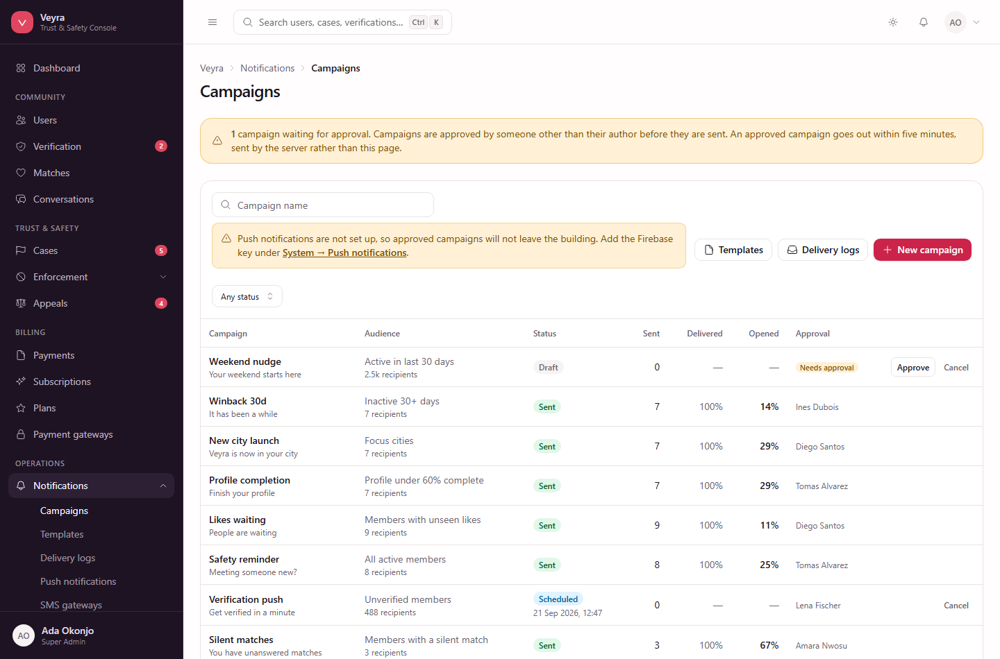
- Press New campaign and choose who it goes to. The audience size is shown before you continue.
- Write the title and body. Keep it short: a push notification is two lines on a phone.
- Save as a draft. Somebody else must approve it — a push cannot be recalled, so a second pair of eyes is the point.
- Once approved it goes out within five minutes, sent by the server. Check Delivery logs for who received it.
Templates
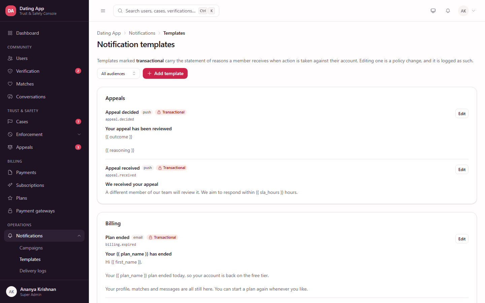
Edit the wording of automatic messages — new match, new message, verification result, renewal warnings, enforcement
notices. Placeholders like {{ first_name }} are replaced when sending; a placeholder you invent that is not in
the list is refused, because {{ frist_name }} reaching ten thousand people is not a mistake anybody catches by
eye. Templates marked transactional carry legal notices and cannot be deleted, only reworded.
10. Masters
Masters are the lists the product is built from. Changing them changes what members see immediately, with no developer and no deployment.
| List | What it controls | Limits |
|---|---|---|
| Interests | What members can pick for their profile | One in use can be hidden, not deleted |
| Profile questions | Prompts, education, "looking for", drinking, smoking, children | Prompts and education accept new entries; the others can only be reworded, reordered or hidden |
| Report categories | What members choose when reporting, and how urgent each one is | Safety categories are always available and always Critical |
| Enforcement reasons | The reason staff pick, and the message the member receives | Reasons the system records itself cannot be switched off |
| Locations | Countries, states and cities — each with its own switch | A place with members in it can be hidden, not deleted. Needs edit_general_settings, like Branding and Mail |
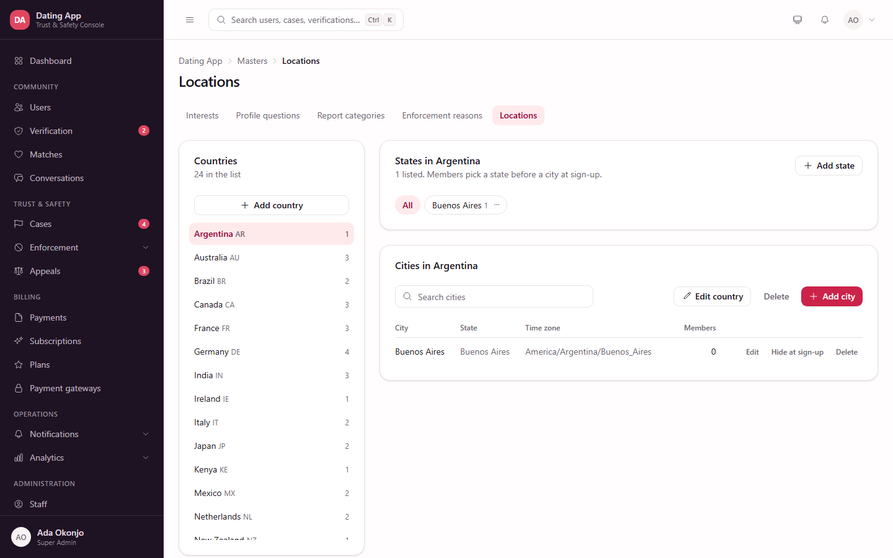
Where the product is offered
Hiding a country, a state or a single city removes it from sign-up and from every city search on the website and in the app — and, since September 2026, from every place a city can be saved: a member cannot pick a hidden city through the app either. Members already in a hidden place keep it and can still save the rest of their profile without being made to move. Because this decides where the product is available, it is platform configuration: Super Admins and Admins can change it, the T&S Lead cannot, and every change is an audit row.
- Pick the country on the left. Hidden countries are marked; edit one to show or hide it.
- Use Hide at sign-up / Show at sign-up on a state or on a single city. Hiding a city leaves its state alone.
- Watch for the red banner: if your change leaves no selectable city anywhere, nobody can sign up or finish onboarding until one is shown.
- Cities need a latitude and longitude — the distance filter measures from them. Featured is only a display hint and grants nothing.
What is switched on: India, Tamil Nadu
This copy is set up for India with Tamil Nadu as the launch state. Every Indian city with 15,000 or more people is loaded with its coordinates (3,739 cities, from the GeoNames dataset), all 35 states and union territories are in the list, and only Tamil Nadu is shown at sign-up — its 496 cities are what a new member can choose from. No other country is loaded. Prices are in rupees.
| You want to | Do this |
|---|---|
| Open another Tamil Nadu town | Masters → Locations → India → Tamil Nadu. Every town of 15,000+ is already there; press Show at sign-up on a hidden one, or Add city with its latitude and longitude for a smaller place. |
| Open another state | Masters → Locations → India → the state → Show at sign-up. Its cities are already loaded and shown, so members there can sign up straight away. Hide single cities if you want a narrower footprint. |
| Open another country, a few cities | Masters → Locations → Add country (name, two-letter code, dial code), then its states if it has any, then each city with coordinates. |
| Open another country, every city | Ask a developer to run the importer for that country (below), then show it in Masters → Locations. |
| Close a place | Hide at sign-up on the city, state or country. Members already there keep it; nobody new can choose it. |
The dataset committed with the code, database/data/geonames-cities.csv, holds every city of 15,000+
people for 24 countries. One command loads a country from it, safely — it matches what is already there, so running it
twice adds nothing, and it never changes a switch set in the console:
php artisan platform:import-geography database/data/geonames-cities.csv --country=LK --dry-run
php artisan platform:import-geography database/data/geonames-cities.csv --country=LKA country not in the file: php artisan platform:convert-geonames --fetch --country=XX refreshes the dataset
from GeoNames. Any CSV in the same nine-column format (country code and name, state name and code, city, latitude,
longitude, time zone, dial code) imports the same way; the command's help documents it. The README's
Adding a country, state or city section has the full developer-side steps, including a launch set-up like
India's for another country.
City data: GeoNames, licensed CC BY 4.0. The attribution stays in the first line of the file.
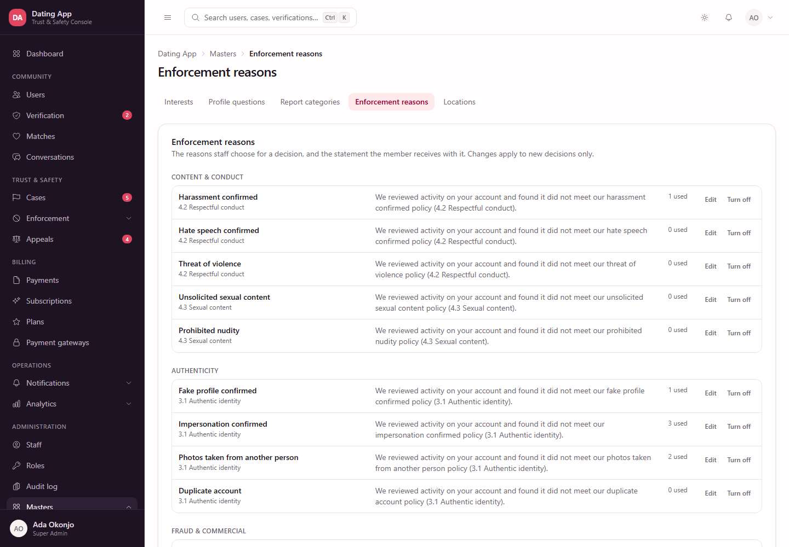
Hiding keeps history intact: members who chose it keep it, past decisions still read correctly, and nothing that already happened changes. Delete only things nobody has ever used.
11. Staff, roles and the audit log
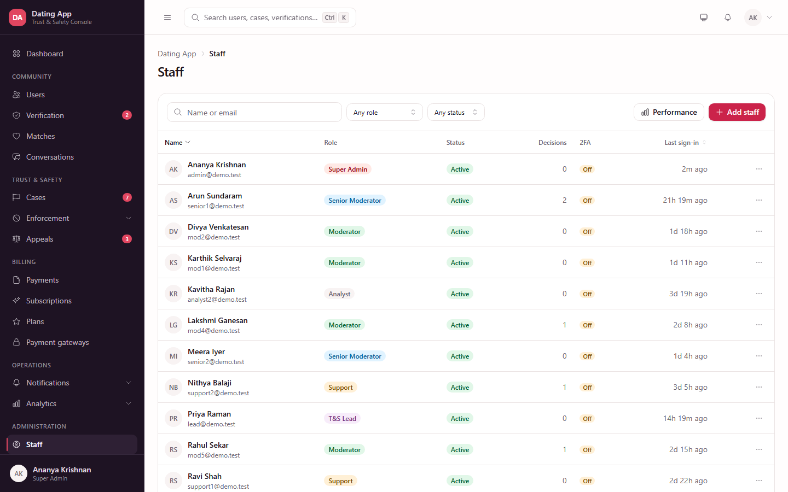
- Add a colleague with their work email and a role. They are emailed a link to set their own password — you never type one for them.
- Use Suspend rather than delete when somebody leaves: their past decisions stay attributed and readable.
- Performance shows decisions per day, time to decide and overturn rate. Overturn rate is the quality signal, not volume.
Roles holds the permission matrix. Saving it records exactly which boxes changed, so a quiet expansion of someone's powers is visible afterwards.
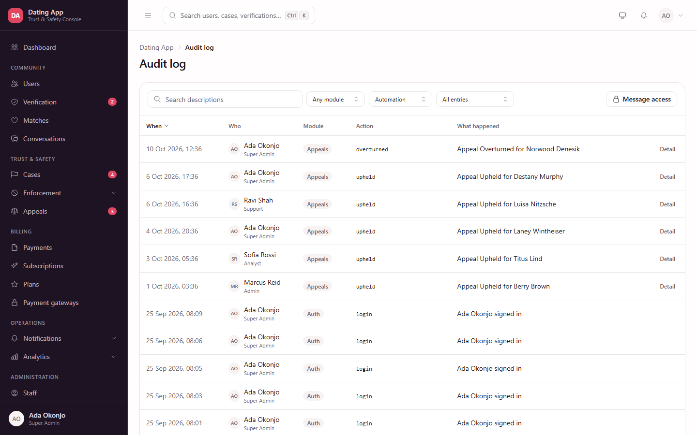
12. Settings and branding
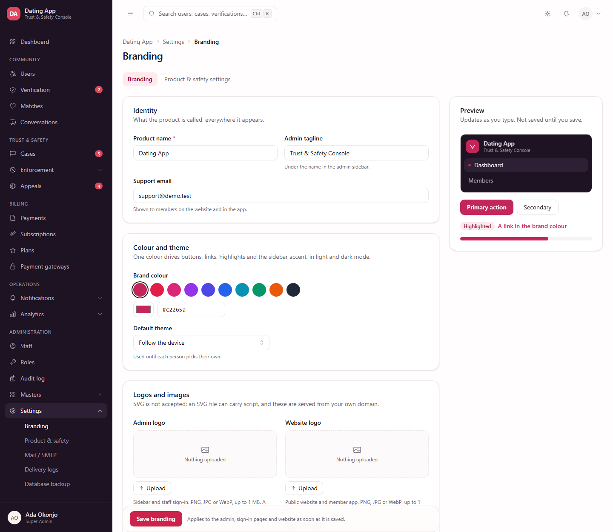
| Screen | Holds |
|---|---|
| Branding | Product name, logos, favicon, brand colour, default theme, company details, website copy, currency, app store and social links |
| Product & safety | Minimum age, daily like limit, distance, SLA windows, risk weights, maintenance mode |
| Mail / SMTP | The mail server used for every email. Keep delivery on "do not send" until the details are right |
| Delivery logs | Email, SMS, payment and member sign-in records |
| Database backup | A download of the database, on demand |
It closes the website, the member app and the API — not the console. Turn it on for upgrades, and remember members see a maintenance page until you turn it off.
13. Going live
Setting up on a new machine
The README in the code folder is the install guide; the short version for Windows with XAMPP is:
- Install XAMPP, Composer, Node.js and Git. Start MySQL in the XAMPP control panel.
- Get the code:
git clone https://github.com/Aswin-0802/dating_app.gitintoC:\xampp\htdocs, then copy.env.exampleto.env. - Create two databases,
dating_appanddating_app_testing, in phpMyAdmin or from the command line. - Run
composer setup, thencomposer dev, and openhttp://localhost:8000/admin/login. - Sign in as
admin@demo.testwith the passwordpassword. Every demo staff and member account uses that password; the README lists them. - For the mobile app: in
dating_app_mobile, copy.env.exampleto.env, set the API address, runnpm installandnpx expo start.
composer setup builds the India set-up with 80 demo members in Tamil Nadu. The same database is also kept as a
backup file, database/backups/dating_app_india.sql, which can be loaded into MySQL directly when you want the
data without running the seeding (member photos are files rather than rows, so a restored copy shows initials instead of
pictures). For a production database run php artisan platform:seed-country india --fresh --no-demo, which loads
the geography and reference data with no demo accounts.
The checklist
Work down this list. Anything left undone is something members will notice.
| # | Task | Where |
|---|---|---|
| 1 | Set the product name, logo, favicon and brand colour | Settings → Branding |
| 2 | Choose your currency before anyone pays anything | Settings → Branding |
| 3 | Replace the demo photography and have the legal pages reviewed | Your own files and your lawyer |
| 4 | Enter SMTP details and switch delivery to "Send with SMTP" | Settings → Mail |
| 5 | Send yourself a test email and check it arrives | Settings → Mail |
| 6 | Upload the Firebase key, turn on push, send a test | Notifications → Push notifications |
| 7 | Add gateway keys, register the webhook, buy a plan with a test card | Billing → Payment gateways |
| 8 | Set your real prices and what each plan unlocks | Billing → Plans |
| 9 | Check where you are launching: Tamil Nadu is shown, every other state and country is hidden. Show more, or narrow it, as in Masters → Locations | Masters → Locations |
| 10 | Create the store products, put every plan in one Apple subscription group, enter the product ids on each plan, add the store keys and notification addresses, and buy once in the sandbox | App Store Connect, Play Console, Billing → Plans, Billing → Payment gateways |
| 11 | Create real staff accounts and remove the demo ones | Administration → Staff |
| 12 | Ask your host to run the scheduler every minute and keep a queue worker running | Your server |
| 13 | Run php artisan platform:preflight and fix everything it lists | Your server |
| 14 | Make one real payment with live keys, then refund it | Billing → Payments |
Without it, plans never end, restrictions never lift, renewal warnings never send and campaigns never go out. It is one line on the server and it is not optional:
* * * * * cd /path/to/the-app && php artisan schedule:run >> /dev/null 2>&114. Common questions
A member says they did not get an email.
Settings → Delivery logs → Email. If it says sent, the problem is at their end — usually spam. If nothing is there, check that delivery is set to "Send with SMTP" rather than "Do not send".
A member paid but has no plan.
Billing → Payments, search their email, press Check gateway. See the billing section above.
Push notifications are not arriving.
Notifications → Push notifications, press Check credentials. If Firebase accepts them, the member has probably not allowed notifications, or has none of their devices registered — their Account page shows what they have turned on. Browser notifications also need an https address.
Somebody was banned by mistake.
Open the member, lift the restriction from the banner at the top, and record why. The lift is linked to the original decision, so the record explains itself later.
A campaign was approved but nothing went out.
Check that push is set up, and that the scheduler is running. A campaign waits for the server, not for the browser.
A member deleted their account but the store keeps charging them.
That is expected, and the member was warned before confirming: only they can cancel an App Store or Google Play subscription, in their phone's subscription settings. We cannot do it for them. Their old plan rows are closed here and any renewal that still arrives is recorded and ignored.
A member says their city is not in the list.
The picker is a search: they need to type the first two letters. If the city really is missing, add it under Masters → Locations with its coordinates, or import a proper dataset. If it is there but hidden, its state or country may be hidden too — all three must be shown for it to be offered.
Can I undo something?
Enforcement decisions are never deleted; they are reversed by a later action that references them. Masters entries can be hidden. A payment can only be refunded in the gateway's own dashboard — then remove the plan from the member's page.
Who can see members' messages?
Only staff with the message-content permission, only with a written justification, and it is logged and reviewed. Admins do not have it by default.